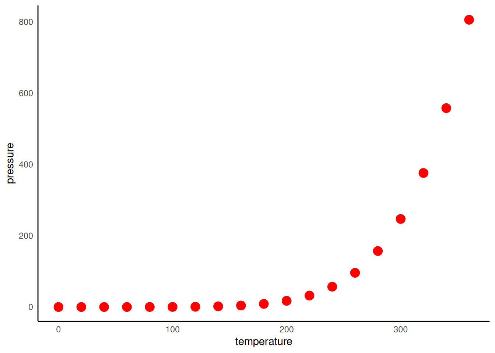
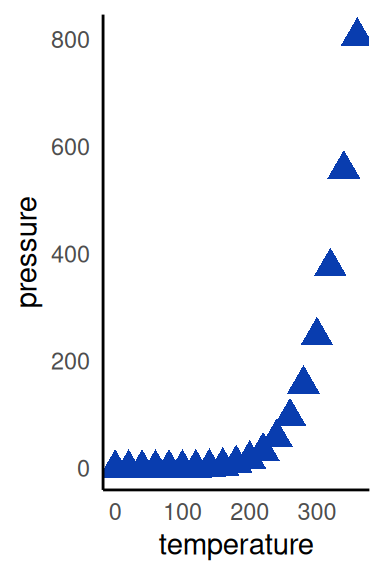
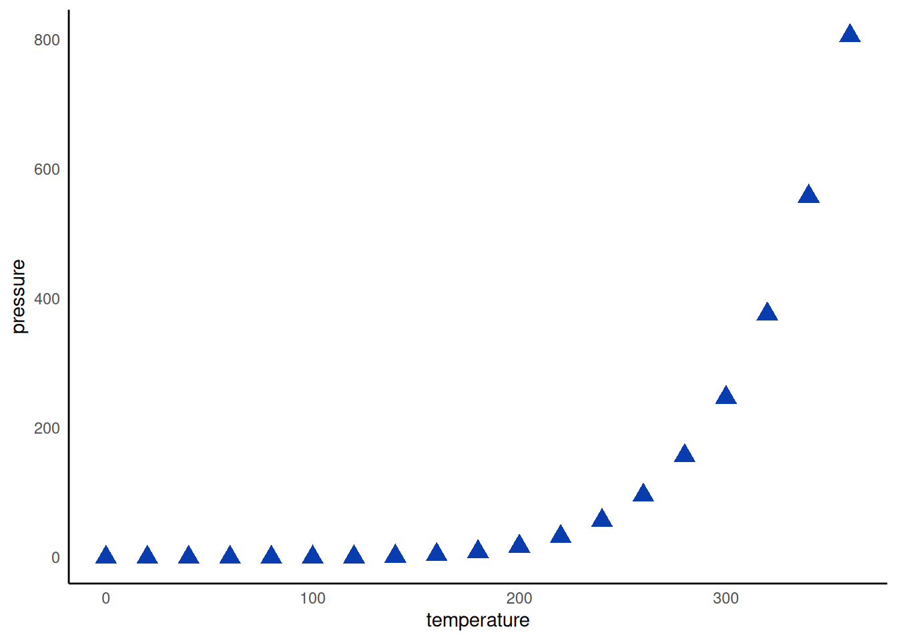
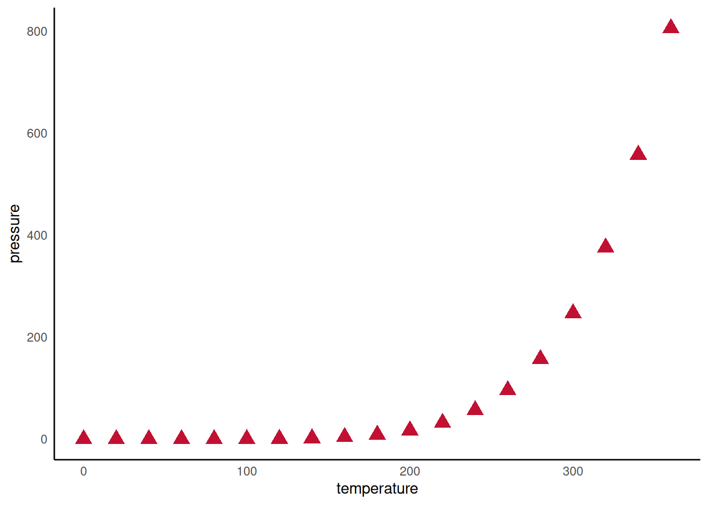
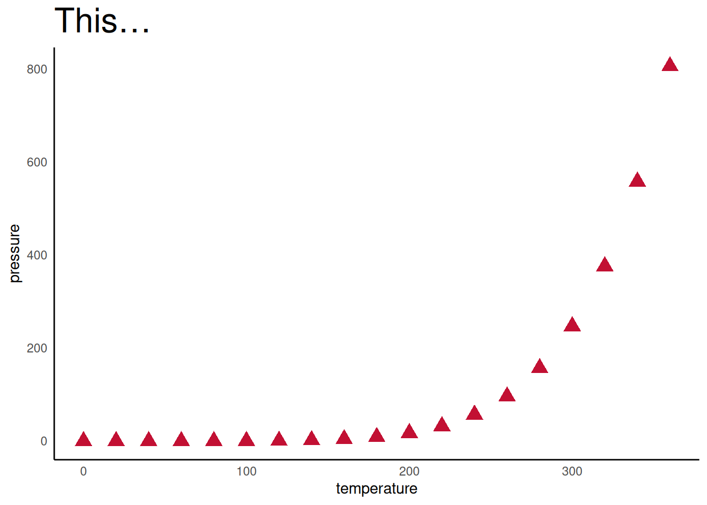
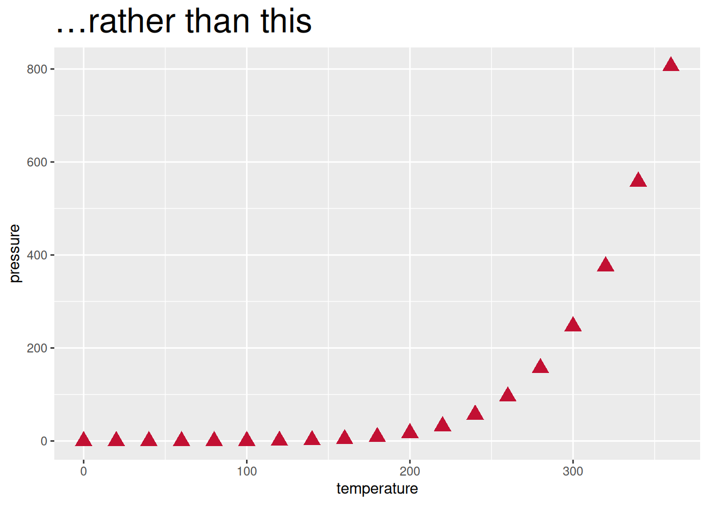

Code
if (!require("pak", quietly = TRUE)) install.packages("pak")
pak::pkg_install("jackwgoodall/usedepartmenttheme")Writing reproducible, branded reports (with or without Quarto and usedepartmenttheme)
Last rendered 17-07-2026
Source:vignettes/articles/quarto-crash-course.qmd
This is a crash course in Quarto alongside applying your department’s branding with the usedepartmenttheme package.
If you are new to markdown, I also hope to convert you: Quarto is a powerful way to communicate pre-publication research findings with colleagues and collaborators, wrapping a narrative around your data and code.
If you are already comfortable with R Markdown or Quarto, the Applying a theme section (or the main package functions) are all you need to get going. If you are new to it, I suggest reading through in order. If you don’t care about the usedepartmenttheme you can skip to Anatomy of a Quarto document.
For more depth (including how to make PDFs, Word documents, books, websites, or dashboards) the Quarto guide is excellent, as is the R Markdown Cookbook, most of which still applies.
In homage to the original R Markdown tutorial, the examples use base R’s built-in pressure and cars datasets (McNeil 1977).
If you have questions, suggestions, or would like to contribute, please open an issue on the GitHub page.
Quarto or R Markdown?
Quarto is the successor to R Markdown. Documents use the
.qmdextension and most of your R Markdown knowledge carries straight over, with a few syntax refreshes noted throughout this page (chunk options move to#|comments, inline code gains braces, tabsets become fenced::: {.panel-tabset}blocks, andoutput:becomesformat:). Unlike R Markdown, one Quarto install works across R, Python, and Julia, and ships its own command-line tool, so it does not depend on any single R package.
usedepartmenttheme installs a branded Quarto HTML extension into your project with a single function call. Your .qmd files then need only a format: key.
Install the package (installs pak first if you don’t have it):
if (!require("pak", quietly = TRUE)) install.packages("pak")
pak::pkg_install("jackwgoodall/usedepartmenttheme")In your project root (the folder containing your .qmd files), run the installer for your department once. For the Florey Institute:
usedepartmenttheme::florey()Other themes are lshtm(), lshtm_mrcg() (MRC Unit The Gambia), and lshtm_mrcu() (MRC Unit Uganda). This creates an _extensions/ folder (commit it to version control so collaborators can render without the package installed) and a _quarto.yml.
Add the matching format: key to your document’s YAML (the Console output provides you with this):
---
title: "My analysis"
format: florey-html
---Render (the Render button in RStudio, or quarto render). You should get an HTML file with the department’s branded header bar, logo, and a matching browser-tab favicon.
Every theme accepts a colour, logo, and favicon:
usedepartmenttheme::florey(logo = "images/my-logo.png", colour = "#450099")Use custom() with your own base colour and logo — the package derives the lighter/paler tints and a readable header-text colour automatically:
usedepartmenttheme::custom(colour = "#003865", logo = "images/logo.png",
name = "My Lab")Tip
The themes impose no document defaults of their own — options like
toc,code_fold, andself_containedare opt-in arguments on every installer. See the package README for the full list.
A Quarto document is made up of:
The YAML header (“YAML Ain’t Markup Language” — recursive acronyms are big in coding circles) tells Quarto how to render the document. The only essential entry is format:; I’d suggest html for almost all tasks (though PDF and Word have their uses). There is much more the header can do to make documents more accessible, as you’ll see.
Formatted text is what makes Quarto so good for sharing pre-publication work: it lets you build a narrative around the data you want to present. The options are shown in the Formatting section.
Code chunks are sections of R code that either set things up or produce an output to show. Code inside a chunk behaves much like normal R — but plots and console output appear directly after the chunk that created them.
All executable code lives in code chunks, framed by ```{r} at the start and ``` at the end. Insert one manually, with the Insert menu, or with Ctrl/Cmd + Alt + I.
You can give a chunk a label after the r, which makes it easier to find later (it appears in the editor’s outline). The chunk below shows its own source (via the echo: fenced option) followed by its result:
```{r}
#| label: chunk-one
1 + 1
```[1] 2In Quarto, chunk options are written inside the chunk on special #| (“hash-pipe”) comment lines, rather than in the chunk header as in R Markdown. They sit just below the opening ```{r}. For example, these lines label a chunk and hide its code while keeping the output:
#| label: chunk-two
#| echo: falseRather than repeat options on every chunk, set document-wide defaults in the YAML execute: block (see the top of this file):
execute:
warning: false
message: falseThis document uses:
code-fold: true in the YAML, so code is shown but hidden behind a Code toggle by default — a nice compromise between collaborators who want to see the code and those who just want the content. Click ▸ Code on any chunk to expand it.warning: false and message: false, so warnings and messages are hidden in the output. Watch for them while you’re building the document, as they won’t surface in the render.options(scipen = 999, digits = 2) (in the hidden setup chunk) to switch off scientific notation and round to two decimal places. Adjust to taste.The most useful per-chunk options are:
| Option | Effect |
|---|---|
echo: false |
Hide the code, keep its output |
eval: false |
Show the code but don’t run it |
include: false |
Run the code but hide both it and its output |
output: false |
Run and show the code but hide its output |
warning: false / message: false
|
Hide warnings / messages |
A per-chunk option always takes precedence over the document default. So to show every chunk except one, keep the default and add #| echo: false to that one chunk.
If you’ll be doing heavy data processing, it’s also worth reading about caching and Quarto’s freeze feature.
Packages used in the render must be loaded in the document, not just in your session. A robust pattern is to bootstrap pacman and let it install and load everything else:
if (!require("pacman", quietly = TRUE)) install.packages("pacman")
pacman::p_load(tidyverse, kableExtra)I also set a global ggplot2 theme once, up front, so every plot inherits it (discussed in Plot themes):
theme_set(
theme_minimal() +
theme(
panel.grid.major = element_blank(), # remove major grid lines
panel.grid.minor = element_blank(), # remove minor grid lines
panel.background = element_blank(), # remove the background
axis.line = element_line(colour = "black") # solid axis line
)
)Create headings with increasing numbers of hashes (#) — the more hashes, the smaller the heading. Anything up to level 4 (####) appears in the floating table of contents (controlled by toc-depth: in the YAML).
This is heading 2 (##).
This is heading 3 (###).
This is heading 4 (####).
Heading 5 (#####) still renders, but won’t appear in the table of contents given our toc-depth: 4.
| Input | Output |
|---|---|
**Two asterisks** |
makes text bold |
*One asterisk* |
italicises text |
***Three asterisks*** |
does both |
`Single backticks` |
format as code |
~~Two tildes~~ |
Links are made by putting the text in square brackets followed by the URL in round brackets, with no space between:
[Link](https://github.com/jackwgoodall/usedepartmenttheme/)makes Link.
Equations are wrapped in $ for inline and $$ for displayed maths:
A reference for mathematical notation is here.
Three or more asterisks make a horizontal rule:
A heavier divide can be made with a little HTML:
<hr style="border: 1px solid black; width: 100%; margin: 1em 0;">(swap black for another colour name or hex code to match your style).
Markdown largely ignores whitespace. Two spaces at the end of a line start a new line; for something more explicit (or multiple blank lines) insert <br>. inserts a non-breaking space.
Tables can be written by hand (as in Text options above), but more elegant ones come from piping a data frame into kableExtra:
table(pressure$temperature[1:5], pressure$pressure[1:5]) |>
kbl(caption = "A hover table") |>
kable_paper("hover", full_width = FALSE)| 0.0002 | 0.0012 | 0.006 | 0.03 | 0.09 | |
|---|---|---|---|---|---|
| 0 | 1 | 0 | 0 | 0 | 0 |
| 20 | 0 | 1 | 0 | 0 | 0 |
| 40 | 0 | 0 | 1 | 0 | 0 |
| 60 | 0 | 0 | 0 | 1 | 0 |
| 80 | 0 | 0 | 0 | 0 | 1 |
Many more options are documented on the kableExtra site.
You can drop values from R objects straight into your prose, so statements update automatically when the data changes. Inline code in Quarto is written in back ticks with a leading {r} marker:
The median pressure is 8.8.which renders as:
The median pressure of the
pressuredataset is 8.8.
If the data changed, that number would update on the next render. (This is a change from R Markdown, where the marker was just r, without the braces.)
Tabs are one of the most effective ways to make a data-rich document approachable. In Quarto, wrap a set of same-level headings in a fenced ::: {.panel-tabset} block; each heading becomes a tab:
p + geom_point(colour = "red", size = 4)
p + geom_point(colour = "#093daf", size = 4, shape = 17)
(In R Markdown this was done with a {.tabset} attribute on the parent heading; the fenced-div approach is the Quarto equivalent.)
Set the rendered size with the fig-width and fig-height chunk options (in inches):
p + geom_point(colour = "#093daf", size = 4, shape = 17)
How much of the page a figure occupies is set with out-width (and out-height):
p + geom_point(colour = "#093daf", size = 4, shape = 17)
Quarto lays multiple outputs out for you with layout-ncol:
p + geom_point(colour = "#093daf", size = 4, shape = 17)
p + geom_point(colour = "#c21033", size = 4, shape = 17)

(This replaces R Markdown’s out.width = "50%" + fig.show = "hold" recipe.)
As in ordinary ggplot2 code you can switch themes (theme_minimal() is popular). Because we called theme_set() at the top of the document, every plot inherits that look unless it specifies its own:
p + geom_point(colour = "#c21033", size = 4, shape = 17) +
ggtitle("This…") +
theme(plot.title = element_text(size = 24))
p + geom_point(colour = "#c21033", size = 4, shape = 17) +
ggtitle("…rather than this") +
theme_grey() +
theme(plot.title = element_text(size = 24))

Quarto’s callout blocks are a clean way to flag notes, tips, and warnings — a feature R Markdown lacks. Write them as fenced divs:
::: {.callout-warning}
Mind the gap.
:::Note
A neutral note.
Tip
A helpful tip.
Warning
Something to be careful about.
Citations come from a BibTeX file referenced in the YAML (bibliography:). The formatting style can be changed with a Citation Style Language file: download one from Zotero’s style repository, put it in your project, and point csl: at it. For example, to use Nature’s style:
bibliography: references.bib
csl: nature.csl
link-citations: trueThe easiest way to build a .bib file is a reference manager such as Zotero — right-click one or more items to export, or File → Export Library for the whole thing. Online tools can also turn DOIs into BibTeX.
An inline citation is an @ followed by the reference key (mcneil1977interactive here), which renders as McNeil (1977). Because we set link-citations: true, it hyperlinks to the bibliography. Adding a # References heading at the end of the document renders the bibliography there automatically.
Link to another section by putting text in square brackets followed by the heading’s slug — lower case, no punctuation, spaces as hyphens:
[the formatting section](#formatting)gives the formatting section. Quarto also has a richer cross-referencing system (label a section {#sec-foo} and refer to it with @sec-foo when number-sections: true); see the Quarto docs.
Most of these have appeared already; here is the full header for this document with a note on each line. YAML is space-sensitive — child lines are indented under their parent.
title: "Quarto: a crash course" # document title
subtitle: "…" # optional subtitle
author: "Jack Goodall" # your name
date: last-modified # auto-fills the last render date
date-format: "[Last rendered] DD-MM-YYYY" # UK-style date
bibliography: references.bib # BibTeX source for citations
link-citations: true # hyperlink citations to the bibliography
format:
html: # render to HTML
toc: true # add a table of contents
toc-depth: 4 # include headings down to level 4
code-fold: true # show code, but folded by default
code-tools: true # add the document code menu
execute:
warning: false # hide warnings document-wide
message: false # hide messages document-wideWhen you install a usedepartmenttheme extension, you’d swap the whole format: block for a single key such as format: florey-html, and the theme supplies the styling, header, and favicon for you.
I hope this crash course has been useful. I’d love your feedback — good or bad — via an issue on the package page.